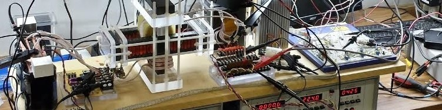

EternalOn - Clean Power
EternalOn stands for "eternally on". Batteries die. Nuclear reactors have to shut down to refuel. Cars suck gas. Electric vehicles have limited range. Solar panels sleep at night. Some of these technologies are more environmentally friendly than others. IEternalOn is pioneering the way for this technology to exist. Take a look at some of our work and consider partnering with us to further these exciting developments.
Project: Flash
Flash takes in a DC input set to a constant current, and distributes this around the various coils in the core using "velocity gates" controlled by an FPGA. By varying the pattern and speed of the current, the power output of this device can be manipulated and higher efficiences can be gained.


Project: ST
ST stands for Smith Transformer - named after a friend of EternalOn's founder. This magnetic circuit xyz.

Graham on Youtube
Want to learn more? See inside the lab? Check us out on YouTube.
VideosGet Involved
EternalOn needs your financial support. Consider donating to the cause!
EternalOn Crowd Funding CampaignDonations like yours are used to purchase equipment and materials for these projects. A miniature version of Flash is underway thanks to donations used to procure some magnetic parts.
Donate Now!About the Founder
Graham Gunderson has been obsessed with electronics ever since he was a little kid. Graham has worked in the electronics industry several decades with part of his career spent building and debunking various inventions that claimed to generate more power than they consumed. During his time there he developed a fascination with magnetic circuits and found several ideas that could not be disproved and he has spend much of his time fine tuning and perfecting what he discovered.

Contact Us
Information to contact: email, phone etc